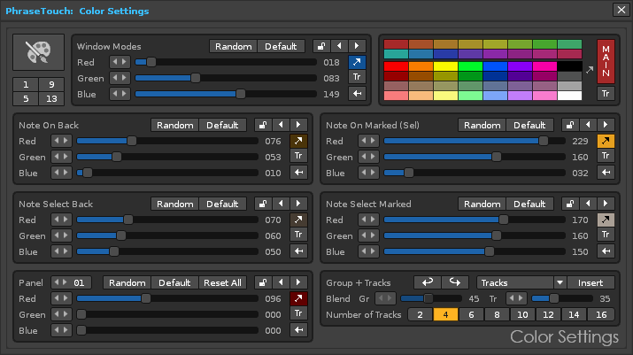
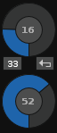

PhraseTouch - User Guide
PhraseTouch v1.3 build 089. Created by ulneiz - Spain, June 2018
Content Index
- 1. Introduction. What is PhraseTouch? Concept
- 2. Quick view of the GUI. Screenshots...
- 3. Main features
- 4. How to start? Previous considerations...
- 4.1. Installation of the PhraseTouch tool. Access and User Guide
- 4.2. Sound and live recording. Enable the OSC Server
- 4.3. High performance of the GUI. Disable the "textures" of your theme (skin)
- 4.4. High performance of the sound. Sample rate configuration (<= 48000)
- 4.5. Help tooltips. Small help information for each control
- 4.6. Peripherals. USB Mouse, USB Keyboard and MIDI Input
- 4.7. Operating System. Compatibility
- 4.8. Plugins (VSTi). Peculiarities
- 4.9. Live recording & OSC + detached instrument editor window. Peculiarities
- 5. Compact Mode View controls. Miscellaneous I-II...
- 5.1. Basic controls: play, surf and views
- 5.2. Duplicate content: instrument or phrase
- 5.3. Export content: pattern-track to phrase or phrase to pattern-track
- 5.4. AutoKeymap section for Keymap playback mode
- 5.5. Color Settings section to PhrateTouch and FavTouch
- 5.6. Import several files from OS. Export/save the files in OS
- 5.7. A lost treasure: find the gem!... What the fuck?
- 6. PhraseTouch controls...
- 6.1. Basic controls. Panel navigator (16 panels). General controls
- 6.2. Panel of notes. Distribution and controls. Master, Oct, notes...
- 6.3. Pulse modes: ALL, SUS and P/R
- 6.4. Track and instrument routing
- 6.5. Phrase controls. Transpose the phrase and/or transpose the "base note"
- 6.6. ChordTouch mode. Select and play chords
- 6.7. MultiTouch mode. Chained of several panels of notes
- 7. Step Sequencer controls...
- 8. FavTouch controls...
- 9. Tricks and advanced use
- 10. Updates & bug fixes
1. Introduction. What is PhraseTouch? Concept
PhraseTouch is a magnificent complement focused primarily to enhance the handling of the phrases with Renoise and the multiple notes reproduction, even of several instruments simultaneously, aimed at users of Renoise who want to experiment with the mouse (it will be necessary to know the handling of the phrases in with Renoise) and at the same time it is aimed for advanced composers (includes own keyboard commands and full compatibility with MIDI Input). It is focused in taking advantage of "keymap playing mode", also for the management of VSTi plugins, and is represented in a dynamic window, with the possibility of playing several phrases of several instruments routed to several tracks at the same time.
PhraseTouch in Compact Mode View
In essence, this versatile complement for Renoise is a multiple trigger of notes (or phrases with keymap), commanded by OSC Server (sound and live recording). It can be used to combine notes or phrases in the process of previous listening, before editing. It can also be used to configure different chords to play or edit/record live or use the integrated Step Sequencer of PhraseTouch to define rhythms between several instruments. PhraseTouch has 16 panels of notes, each with 10 octaves of notes to play, even play simultaneously, with instrument and track routing capability in each panel of notes.
PhraseTouch integrates a elaborated "Step Sequencer". It is capable of playing 16 or 32 steps, through 3 window modes. It has jump buttons, routing of the panels of notes or mute, octave assignment for each step, manual time settings in milliseconds (Play and Wait). It is set using the note selection buttons in each panel of notes routed. Therefore, it allows sequencing steps between different instruments, even playing in different tracks, both for preview of the sound and for the automatic recording of parameters in the pattern editor. The combination of the Step Sequencer and the panels of notes of the PhraseTouch form a powerful complement to locate sound textures before composing. Test and listen previously multiple combinations of sounds quickly, before editing.
The tool is accompanied by a "slave" window called "FavTouch". The FavTouch window allows you to import up to 64 favorite notes from PhraseTouch window, each one of which can be routed to a different track and instrument. FavTouch is designed to be controlled from a MIDI pad controller. You can play the notes from the USB keyboard as well (32 notes with 2 octaves, 64 notes) and obviously from the mouse. It can be used effectively for percussion kits of multiple instruments, controlling specific notes...
PhraseTouch is cleverly designed for use with the mouse, with different trigger modes (ALL, SUS, P/R). But it has its own keyboard commands and is fully compatible with MIDI Input. Your GUI is based on the "goldblue" theme (included in the tool). However, the user will be able to customize the RGB colors of the all of the panels according to the theme used, through the "Color Settings" control panel.
Navigation and display of panels (animated image for HTML content)
PhraseTouch has a compact mode, to have it available at all times. It has some playback, undo, redo and navigation buttons. In addition, it has some small tools, but very useful, to configure the keymap much faster (AutoKeymap), massively import various patterns-track to phrases and vice versa, among other controls related to the phrases. Play your phrases and combine them to find sound textures, without the need to record anything, and take advantage of the power of VSTi instruments. PhraseTouch is a powerful complement, capable of playing hundreds of notes at the same time (MultiTouch mode), combining several instruments and the power of phrases, all with a single click of the mouse. Use it with deserved moderation; it is advisable to use powerful hardware to obtain the best performance results!
For advanced recording of notes in the pattern editor, PhraseTouch can edit on different tracks at the same time, with different instruments at the same time. Use a fully mapped MIDI keyboard for much more advanced multi-editing control. You can play live several phrases or multiple notes while playing your song project...
Touch and edit in another way with PhraseTouch + Renoise!
2. Quick view of the GUI. Screenshots...
2.1. Compact Mode View GUI ▲
The Compact Mode View has different sizes according to the deployed tool panels (Miscellaneous I and II). In the upper part are the basic controls, occupying a single line when everything is hidden. Drag this small window in the upper left corner to start unfolding panels. The rest of the controls are tools related to phrases and the import / export of compatible content and visual configuration (Color Settings). Use the top right button to display the panels of notes. PhraseTouch has a lower status bar.
PhraseTouch in Compact Mode View. Different panels of tools deployed
2.2. PhraseTouch GUI ▲
The PhraseTouch deployed has a top bar of buttons for general control. Underneath it, the panels of notes are located. PhraseTouch can display a panel (1x1), 2 panels in column (2x1) or 4 panels (2x2). The navigation and distribution buttons allow to display up to 16 panels in different combinations, suitable for more compact screen resolutions. It shows only one panel, and you can use panels 1,5,9 and 13 occupying a small space. The first panel of notes is special. It can work as a master to play the other chained panels at the same time. Each panel has a numbering in the upper right corner. This button will activate the MultiTouch mode (play several panels of notes from panel 1(1 Mst)).
1x1 configuration (real size image). PhraseTouch can show the panels 1, 5, 9 or 13
2x1 configuration (real size image). PhraseTouch can show the panels 1-2, 5-6, 9-10 or 13-14
2x2 configuration (very small size image). PhraseTouch can show the panels 1-2-3-4, 5-6-7-8, 9-10-11-12 or 13-14-15-16
2.3. Step Sequencer GUI ▲
Step Sequencer works with the PhraseTouch window, it is directly dependent. It has 3 window modes, one compact for 16 steps, another compact for 32 steps in two lines and another for 32 steps in a single line. Basically it works like a classic step sequencer, but with the ability to be able to enter the values of the times directly, divided between "Play" and "Wait".
To work it is necessary to select the notes from the PhraseTouch and configuring the selectors of steps, panels, and even the octaves from the Step Sequencer. It is possible to skip steps, restrict the number of steps or even accelerate or decelerate all the steps, or any independent step while playing. Control it with the mouse, enter the values with the USB keyboard or control it from MIDI Input.
Step Sequencer window. Three modes, 16 steps, vertical 32 steps & horizontal 32 steps (reduced image)
2.4. FavTouch GUI ▲
The FavTouch window looks similar to a panel of notes of the PhraseTouch, but more simple and with larger pads. This time, the control buttons are below. It has two display modes, for 32 pads or for 64 pads. Specially designed to be controlled from a MIDI pad, you can use any configuration of MIDI pad: 2x2, 2x4, 2x8, 4x4, 4x8 or 8x8... It also allows you to display the characters of the keys to control it from an alphanumeric USB keyboard.
FavTouch window. Two modes, x32 (32 pads) and x64 (64 pads)
2.5. Color Settings GUI ▲
This basic window is used to change the RGB colors of each panel. PhraseTouch has a studied color distribution. This makes it easier to differentiate each panel of notes. In this way, the user can adapt the colors to their custom colored theme. It will also change the colors of the FavTouch. It has 5 small panels with 3 sliders (R-G-B), in addition to the color panel. Color Settings Window can import / export the colors of the tracks, allowing associating each panel of notes with a specific track by color.

Color Settings window. It works with PhraseTouch and FavTouch
2.6. Keyboard Commands GUI ▲
This window displays the keyboard commands for PhraseTouch, Step Sequencer and FavTouch. Each command has its description. It is advisable to use the mouse combined with the keyboard commands to control the complete tool. PhraseTouch, Step Sequencer or FavTouch are three floating windows. It is necessary to have selected any windows of this tool to use these keyboard commands. You can control Renoise from the commands of this tool. Make sure to select Renoise to use your commands.
Keyboard Commands window. Use the commands together with the mouse!
2.7. MIDI Input GUI ▲
Practically the entire PhraseTouch, Step Sequencer and FavTouch are compatible with MIDI Input. For example, you can combine a 61-key MIDI USB keyboard with a 64-pad MIDI USB controller to control it. If your MIDI keyboard has 16 channels or more, you can map your keys with all the octaves of all the panels of notes (the Note-On buttons). Each panel of notes has more than 380 controls (in total more than 6000 controls to map). Use the MIDI mapping strategically. You get maximum control, also with MIDI Input.
PhraseTouch with selectors for MIDI Input. With Renoise press [CTRL + M]
MIDI Input includes great capabilities and turns a great tool into something extraordinary. PhraseTouch is widely equipped to massively send MIDI CC messages. Please note that this complement for Renoise has 16 identical and independent panels of notes, all entirely mappable. Thanks to this, several controls of the same type (or even different) can be controlled with the same CC message. Stop for a moment and imagine how many combinations you can do between controls or between note buttons. Thanks to this, it is possible to trigger several notes of different instruments with a single CC message, a single press of a pad, or a key.
To understand the magnitude of PhraseTouch capabilities, this tool is capable of controlling up to 16 instruments as if it were a single instrument, wildly! It's just a matter of taking full advantage of the MIDI input configuration. For something more practical, you can divide your MIDI keyboard between 4 zones (or more) to control 4 instruments, dividing them into octave ranges. The possibilities are many!
Make the most of MIDI input with PhraseTouch!
3. Main features
- Compatible with Renoise 3.1.1 (tested under Windows).
- Attractive GUI, with new icons and careful distribution.
- Dynamic windows, of different sizes.
- Own status bar.
- Customizable colors, with independent panels RGB.
- Association by color of tracks with panels.
- Include some theme for Renoise (goldblue theme...).
- Compatible with OSC Server for sound and editing.
- Widely controllable via MIDI Input.
- Knobs, faders, popups, and valueboxes compatible with "soft takeover" for MIDI Input.
- Own keyboard commands for control.
- Specially focused for instrument and phrase controls (Keymap playback mode).
- Also designed for pre-listening. Play and try sound textures without editing.
- Small tools for the control and manipulation of phrases (AutoKeymap).
- Own section to export and import compatible files.
- It allows to control up to 16 instruments at the same time.
- It allows to route the instruments in up to 16 tracks.
- Control of 16 panels of up to 120 notes (16 identical panels, except the colors).
- Oct X/panic buttons per octave. Master/panic buttons per panel of notes. Main Panic, for all panels.
- Buttons of Note On and Note Off. Buttons of selection of notes.
- Allows the configuration of chords and trigger them, until 59 preconfigured chords, through ChordTouch mode.
- Several flexible configurations of panels: 1x1, 2x1 or 2x2.
- It allows the simultaneous edition in several tracks, of several instruments.
- Step Sequencer window of 16 or 32 steps integrated for PhraseTouch.
- FavTouch window to import and trigger favorite notes, specially designed for MIDI pad controllers (until 64 pads).
- Various modes of pulsation: ALL, SUS and/or P/R.
- MultiTouch function. Control several panels of notes from panel 1 (1 Mst). Chained independent panels.
- Play several phrases and several notes of different instruments on different tracks simultaneously.
- User's manual in English, format HTML (can be translated with google translator from Chrome).
- Updateable code. Modify/manipulate it yourself.
4. How to start? Previous considerations...
PhraseTouch is a slightly special complement. It is not any tool with a small static window, but it is a dynamic window, of different sizes and deployed to the maximum it occupies almost an HD screen (1920x1080 pixels). This conditions its use. That's why there are some previous considerations, to obtain the best experience, not only sound, but also graphic.
To begin, it is advisable to use 2 HD (2x 1920x1080 pixels) screens or a 2K monitor at least to be able to use extensively this great complement together with Renoise. However, it is also possible to use only 4 panels of notes (1, 5, 9 and 13) on screens with smaller resolutions, such as 15 "laptops.
4.1. Installation of the PhraseTouch tool. Access and User Guide ▲
To install the tool, simply download the tool and double-click of the mouse in the XRNX file or drag it over any area of the Renoise window. It will be accessible from the "Tools" tab and from the contextual menu of Pattern Editor, Mixer and Phrase Editor.
About & User Guide window
PhraseTouch has this integrated User Guide in HTML format. To access it, you need to press the "?" Button. Please read this User Guide carefully to learn how to effectively control this magnificent tool. You can use Google Chrome browser to translate the entire User Guide to your preferred language.
4.2. Sound and live recording. Enable the OSC Server ▲
PhraseTouch, your Step Sequencer and FavTouch use OSC Server to be able to play sound and to be able to edit notes in the pattern editor, even for live recording (also including velocity and delay parameters...). Keep in mind that it is possible to configure some recording parameters in Renoise Edit/Preferences/MIDI in "Record & Play Filter" (this works with OSC Server).
● To activate the OSC (Open Sound Control), go to Renoise Edit/Preferences/OSC and "Enable USB Server", Protocol "Udp" and Port "8000". Please, note that you are activating OSC to access the network. Read the "Renoise User Manual" for risks when using a network port to transfer data.
4.3. High performance of the GUI. Disable the "textures" of your theme (skin) ▲
PhraseTouch is defined by dynamic windows. Renoise 3.1.1 uses textures (images BMP) in the themes (skins) to avoid the flat aspect of the GUI, getting an aspect with greater relief. However, the textures do not behave well in large and dinamyc tools that can be reduced the size instantly, drastically influencing the graphic performance, even generating notable lags. For a fluid experience, it is recommended to turn off the textures.
● To deactivate it, go to Renoise Edit/Preferences/Theme and configure Textures = "None".
4.4. High performance of the sound. Sample rate configuration (<= 48000) ▲
Since the PhraseTouch can launch a large number of notes/phrases at the same time, it is reasonable to set the sample rate at a reasonable value, to prevent the high CPU requirement. The value of 48000 is reasonable for good sound quality without hurting the low percentage of CPU usage too much. When you increase the value of the sample rate, you are considerably increasing the processing of the CPU.
● To configure it, go to Renoise Edit/Preferences/Audio and configure Sample rate = "48000" (or less).
4.5. Help tooltips. Small help information for each control ▲
Practically all the controls (buttons, sliders, checkboxes, popups...) have a description tooltip and help. Please, read each tooltip to understand each control. Renoise must have the tooltips view activated. Hold your mouse over a control to display the tooltip.
● To activate it, go to Renoise Edit/Preferences/GUI and enable "Show tooltips".
Tooltip example view. Export patterns-track to phrases tooltip. AutoKeymap tooltip
4.6. Peripherals. USB Mouse, USB Keyboard and MIDI Input ▲
Although PhraseTouch has a lot of buttons to control them from the mouse, this add-on for Renoise is configured to handle it by combining three peripherals: USB mouse, USB keyboard and MIDI keyboard/pad controller.
- Use only the mouse for general control.
- You can also use a USB keyboard to play notes, both from the PhraseTouch and FavTouch panels of notes. In this case, it is necessary to use the keyboard valuebox in order to select one of the 16 panels to control, or the FavTouch. You can control the 120 notes using the control of octaves "Oct" of Renoise.
- Of course, PhraseTouch is compatible with MIDI Input. You can map 95% of all controls, combine them with the controls of Renoise for maximum control. You can even combine several peripherals through the MIDI input for multiple playback tasks. With the Renoise window selected press [CTRL + M] to map it.
It is advisable to combine several peripherals. Take advantage of PhraseTouch native keyboard commands along with the mouse at the same time, so you can handle more controls at the same time. You can also do the same by combining a MIDI keyboard with a MIDI pad. You can control the PhraseTouch and the FavTouch at the same time, according to the mapping done. Consider seriously using a MIDI peripheral at least. Do not settle only with the mouse.
4.7. Operating System. Compatibility ▲
The current version of PhraseTouch is programmed and widely tested under Windows 10. It is possible that some functions are not completely compatible with other operating systems, such as OSX or Linux. These functions can be related to path folders to read, export or import files. Each operating system has a different treatment with the configuring the path folders. If you find any error or bug related to this (using OSX or Linux), please, communicate it to the author of this tool to solve it...
4.8. Plugins (VSTi). Peculiarities ▲
Using plugins is one of the best parts of Renoise for its wide possibilities. Some plugins may be responsible for errors or crashes. Programmers can resolve errors with new versions. It is advisable to use the latest version of each plugin and remove the plugins with errors.
However, the Renoise API (3.1.1 version) and OSC do not get along very well with the plugins, which may be the cause of small lags, or audio and graphic blocks. These small and annoying problems are completely unrelated to the tool code, they do not affect stability, but they can be very annoying.
PhraseTouch is also designed to easily handle VSTi plugins. Additionally, it includes two buttons for navigate between presets ("previous plugin preset", "next plugin preset") that are compatible with MIDI Input. But some plugins are not compatible with changing Renoise presets, but it is necessary to use the plugin's own controls to change presets. When using OSC, it is advisable not to touch the plugin windows as much as possible, until the Renoise API is officially reviewed to solve it.
4.9. Live recording & OSC + detached instrument editor window. Peculiarities ▲
When the instrument editor is detached in a window (even when it minimized) OSC loses its ability to write notes in the pattern editor in the live recording process (with the edit mode enabled). For live recording to work through OSC Server, it is necessary that the instrument editor is not in the separate window.
This is a very uncomfortable situation, which if unknown, can be an unbearable headache. This inappropriate behavior is the responsibility of Renoise (v3.1.1), not of this tool. Please keep this issue in mind!
5. Compact Mode View controls. Miscellaneous I-II...
PhraseTouch starts with a compact view. Some buttons are used to present small tools. But you can keep a small view of the window, which only occupies a line of buttons. This allows you to use the included FraseTouch with the hidden panel of notes.
PhraseTouch Compact View. Micellaneous I and II deployed.
5.1. Basic controls: play, surf and views ▲
The first group of basic controls consists of:
- Play pattern (restart or continue).
- Stop pattern and panic. If stop, jump to first line.
- Enable/disable Edit Mode for Pattern Editor.
- Undo.
- Redo.
Some navigation buttons:
- Show Pattern Editor.
- Show Phrase Editor, with Keymap mode.
- Show/hide Plugin External Editor. If the plugin not exist, show the Plugin Editor.
- Show MIDI Monitor.
- Invoke Step Sequencer window for PhraseTouch.
- Invoke FavTouch window (for import favorites notes from the panels of notes.
The following buttons display panels or new windows:
- Deploy Miscellaneous I mini panel: tools for phrases.
- Deploy Miscellaneous II mini panel: to Color Settings, themes and export/import compatible files.
- Invoke Keyboard Commands window.
- Invoke Help window. Access to the user guide manual.
- Deploy PhraseTouch for show panels of notes. Initially it will show a single panel of notes (blue button).
5.2. Duplicate content: instrument or phrase ▲
These two buttons are used to easily duplicate the selected instrument or duplicate the selected phrase from the mouse. They are distributed in column along with other buttons to export data between track-patterns and phrases.
5.3. Export content: pattern-track to phrase or phrase to pattern-track ▲
The following buttons are great for translating data from patterns-track to phrases and vice versa.
The first button has two modes depending on how you select items. Select only a track to export the visible pattern-track in a phrase. Also select a range of up to 126 patterns in the sequence to massively export. The operation will create new phrases. The red buttons are used to clean data (no delete). Please, read each tooltip of each control to know more...
5.4. AutoKeymap section for Keymap playback mode ▲
AutoKeymap is a "clever" operation to automatically distribute the phrases in the keys in the keymap playback mode. All PhraseTouch complement is focused for use with the Keymap mode. On the right there are 3 buttons to change the playback mode.
AutoKeymap comes preconfigured to start associating phrases from the C-3 key to the right, assigning 2 keys for each phrase. It is possible to modify flexibly the start and the number of keys. For example, you can start in the C-0 key and assign 120 phrases, each in a key, or just one phrase for all the keys. Remember that an instrument can contain up to 126 phrases. Each operation of AutoKeymap makes a complete cleaning beforehand. You can use undo to rectify.
All these controls are associated with AutoKeymap, exclusive for keymap mode (visualize the Phrase Editor to understand the correspondence). They will be applied to all the phrases associated with the keys. It is also possible to modify the selected associated phrase, using the MOD button to apply.
The "Lns" valuebox is a special option. It allows selecting the number of lines to be used in the phrases for the AutoKeymap operation. The Lns option also works with exporting data from pattern-track to phrase. You can use it in both operations.

These are several buttons to navigate between phrases quickly. The small 2-digit panel will always show the last selected phrase. The red button is used to delete the selected phrase.
5.5. Color Settings section to PhrateTouch and FavTouch ▲
The following two buttons are intended to customize the appearance of PhraseTouch, FavTouch and Step Sequencer. It has some options to modify colors and adjust them better to the theme used by the user. Remember to disable the textures for a better graphic experience faster.
- Brush button. Invoke the Color Settings window.
- Watercolors button. Invoke a OS window to select a theme. You can use the "ulneiz_goldblue_speed_theme.xrnc" theme so that the appearance matches the images in this user manual (This theme has the textures disabled "Textures = None" for more graphic performance).
Color Settings window
The buttons 1,5,9 and 13 show each panel of notes in 2x2 configuration. So it is easy to modify the colors through 5 RGB panels, each with 3 sliders. Each RGB panel has several specific buttons, to play with random values or return to the default color values. The last panel on the left is something special. It serves to define the main color of each panel of notes, being able to modify 16 colors, one for each panel. It is possible to restore them all from the "Reset All" button.
In the upper right corner there is a full color panel, and a monitor called "MAIN", which shows the color that can be imported or exported to each RGB panel. use the arrow buttons to export / import colors between panels.
In addition, it is possible use the "Tr" buttons to export / import the colors of the tracks, associating each panel of notes with each track if necessary, also by color.
Another feature is to associate the colors of the tracks with the colors of the panels of notes, or even insert tracks or groups with tracks with the associated colors or modify the color of existing tracks.
PhraseTouch will save the color settings, even when Renoise is closed. If you want to keep the color configuration if you uninstall the tool, you can first make a backup by saving the "preferences.xml" file in a secure folder. This file is in the root direction of this tool and you must copy it after closing Renoise. Once saved, you can uninstall the tool. You can simply recover it by replacing this file with the original of the new installation and restart the tool later.
5.6. Import several files from OS. Export/save the files in OS ▲
PhraseTouch also has its own section for loading and saving files compatible with Renoise, mainly focused on instruments and phrases. This way, it is easier to manipulate phrases with the operating system.
- Invoke a OS window to load files in Renoise (xrns..., xrni, xrnz). It allows to load a moderate amount of files at the same time. Load several phrases or instruments in one step. The amount will depend on the length of the names. The smaller, more quantity may load.
- Select a destination folder to save in the OS all the phrases of the selected instrument, or the selected instrument or all files. The user must create a new folder if necessary. The editable text bar will show the valid path. Finally, save all the files by pressing "Save".
5.7. A lost treasure: find the gem!... What the fuck? ▲
Let's play a little! Would you like to have a small extra panel of controls for advanced editing? Search and you will find!!!
A lost gem: Advanced Editor Panel (AEP) to cleaning, substitution, swap of values & more...
PhraseTouch has a lost gem! Find it by manipulating all the controls; one of them will activate it in a very specific way... But do not tell anyone!!! Allow others users to find it for themselves... When you find a way to activate this panel, the following message will appear for the first and last time in each session:
YOU HAVE FOUND A GEM !!! ENJOY IT :)
This extra control panel can be displayed or hidden and allows more control and speed with the mouse for data cleaning tasks inside the pattern editor. In addition, it allows the substitution of instrument, note, volume, panning and delay specific values. As if that were not enough, it includes controls to copy, move (import & insert) or swap notes or rows (NTE+INS,VOL+PAN+DLY+SFX,TFX) between consecutive note columns or between consecutive lines (including pattern jump). Some controls include keyboard commands as well to make everything easier.
...Will you know how to find it?
6. PhraseTouch controls...
PhraseTouch has up to 16 panels of notes. All the panels are identical, with the same distribution and number of controls (except the colors). Each panel of notes is placed below a main line of basic controls. Here are the navigation buttons for each panel, among others related controls.
A panel of notes has a superior line of own controls and 10 columns of 12 notes distributed by octaves (C- to B-). On the right is a column with a large top button, which names the panel with a number from 1 to 16 and serves to activate the MultiTouch (chained panels). This right column is completed by two vertical sliders. The upper slider serves to control the volume parameter for each note. The lower slider directly controls the volume of the instrument.
The first panel of notes is a special panel, different from the others. When the MultiTouch is activated in each panel, panel 1 acts as master (1 Mst) and the rest as chained, which will play the same as panel 1. It is recommended to assign first a different instrument to each panel of notes. In this way, it is possible to play simultaneously different instruments from a single panel of notes (from 1 Mst).
6.1. Basic controls. Panel navigator (16 panels). General controls ▲
The top line still shows the same basic navigation buttons as in compact view mode. On the left a general panic button is included, along with a general deselection button. Both work with all panels of notes.
On the right there is a valuebox control to assign the USB alphanumeric keyboard input to any of the 16 panels of notes and also for the FavTouch window (uses the USB keyboard to play notes; the panel of notes selected needs enabled the P/R mode to work). On the right is the famous blue button to activate or deactivate the compact view mode.
The following controls are the navigation for the panels of notes...
- Button 1. Show the first group of panels (for 1 to 4).
- Button 5. Show the second group of panels (for 5 to 8).
- Button 9. Show the third group of panels (for 9 to 12).
- Button 13. Show the fourth group of panels (for 13 to 16).
- Show only a panel (1x1).
- Show two panels (2x1).
- Show four panels (2x2).
The following controls are for control in group the panels of notes. With them it is possible to control all chained panels of notes (MultiTouch mode) or make useful combinations with MIDI input to play notes simultaneously...
- General ALL Mode checkbox. For all panels of notes, press the notes without release the rest.
- General SUS Mode checkbox. For all panels of notes, hold the note pressed (sustain note).
- General P/R Mode checkbox. For all panels of notes, press and release the note with two pulsations. It involves activating the sustain mode (SUS). It will enable the USB alphanumeric keyboard to play notes!
- Tracks distribution button. Distribute automatically the tracks to each panel of notes. Select before a initial track to start.
- Instruments distribution button. Distribute automatically the instruments to each panel of notes. Select before a initial instrument to start.
- General lock/unlock checkbox. Lock/unlock the selected track and instrument for all panels of notes for more security (avoid being able to change them from the mouse by accident).
- General anchor checbox. Anchor the valueboxes for the track and the instrument for all panels of notes. Prevent the automatic selection of tracks and instruments.
6.2. Panel of notes. Distribution and controls. Master, Oct, notes... ▲
The 16 panels of notes have the exact same distribution. To control a note, there is a distribution of 3 buttons: Master (on), Panic (off) and Selection.
The first line has 3 general buttons for all the notes: General Master, General Panic and General Deselector. Each column of notes represents an octave. Each octave can be controlled by three other buttons placed above: Octave Master, Octave Panic and Octave Deselector.
The distribution of each vertical column is sorted with the notes from bottom to top, from C- to B-. Each note has a Note On button, a Note Off button and a Selection/Deselector button. The selected notes can be played simultaneously from the Master buttons. Play the notes with the mouse, with the USB keyboard, or with a MIDI keyboard / pad.
- Note On button.
- Note Off button. This button will be canceled when the P/R mode is enabled or none (ALL, SUS and P/R disabled).
- Selector/deselector button.
On the right of the panel of notes are the sliders. The upper slider controls the note volume, whose parameter will be recorded in the pattern editor. It is possible to manually enter the value in the upper two-digit display. Determine the value before playing the notes.
The lower slide bar controls the volume of the instrument. Allows you to mute the instrument or change the volume in real time. Both sliders have a lower button to reset the value directly.
- Panel name button. Enable/disable the Multitouch mode.
- Volume slider for notes. Range: 00 to FF
- Volume slider for instrument. Range: -INF db to 6.0 db
- Mute button instrument (-INF db).
6.3. Pulse modes: ALL, SUS and P/R ▲
The following buttons are exclusive for each panel of notes. Use the MultiTouch mode to control multiple panels...
- ALL checkbox. Press the notes without release the rest.
- SUS checkbox. Hold the note pressed (sustain note).
- P/R checkbox. Press and release the note with two pulsations. It involves activating the sustain mode (SUS). It will enable the USB alphanumeric keyboard to play notes!
6.4. Track and instrument routing ▲
PhraseTouch allows to link a track and a specific instrument in each panel of notes. Thus, it is possible to control several instruments at the same time.

- Select the track in the pattern editor. It will activate with the locked padlock.
- Valuebox selector to route a specific track. MIDI Input is limited to 128 values for faders or knobs.
- Select previous/next the plugin preset of the choosen instrument (also compatible with MIDI Input). It will activate with the locked padlock.
- Show/hide the Plugin External Editor, if exist, of the choosen instrument. It will activate with the locked padlock.
- Select the instrument in the instrument box. It will activate with the locked padlock.
- Valuebox selector to route a specific instrument. MIDI Input is limited to 128 values for faders or knobs.
- Lock/unlock the valuebox selector of track and instrument for security.
- Anchor the track and instrument for this panel of notes. Disabled prevent the automatic selection of track and instrument choosen. Enabled each pressed panel of notes will automatically select each track and each instrument in Renoise.
6.5. Phrase controls. Transpose the phrase and/or transpose the "base note" ▲
The following controls are intended for phrases. PhraseTouch is specially designed to work with the Keymap playback mode ("K" button). Press "O" button to play the notes without associating phrases...
- Keymap button. Associate the phrases to several keys.
- Program button. Associate a phrase with all the keys.
- None button. Without associating phrases.
- Phrase index monitor. Enter manually the index in hexadecimal of the desired phrase to select it.
- Name of the phrase monitor. Displays the name of the selected phrase.
- Phrase transpose valuebox. Transposes all the notes of the selected phrase, with a range of until ±24 semitones.
- Base note transpose valuebox for Keymap playback mode. Change the value before playing any note.
6.6. ChordTouch mode. Select and play chords ▲
PhraseTouch can display a small panel of options to select and play specific chords. It is possible to select a chord within each panel of notes and its root note on the fly...
By having 16 panels of notes, it is possible to play up to 16 complex chords (whose notes invade at least 2 octaves). The "Master" button will trigger all the selected notes that make up the chord. The best way to control it is to map the 16 "Master" buttons through MIDI Input.
In addition, if the chord only invades a specific octave, it is possible to control it from the Oct X buttons. On the other hand, it is possible to build your own chords by selecting the notes conveniently. For a complete experience, it is advisable to display the 4 panels of notes, in 2x2 configuration. You can also use the Step Sequencer to generate chord progressions. This can be very fun!
To access the ChordTouch mode, enable the "Treble Clef" button. This will hide the phrase controls and display the chord controls. It is possible to enable/disable these buttons randomly. However, it is also possible to enable/disable in group.
- Press and hold the "Treble Clef" of panel of notes 1 for more than 1.5 seconds to enable/disable them all together. All the "Treble Clef" buttons will be enabled/disabled (inside the 16 panels of notes).
- Press and hold any other "Treble Clef" button of panel of notes > 1 for more than 1.5 seconds to enable/disable all lower number panels. For example, use "Treble Clef" button of panel of notes 3 to enable/disable directly from 3 to 1.
- Treble Clef button. Enable/disable the ChordTouch mode. If enabled, it will hide the phrases controls.
- Chord selector popup. Allows you to select up to 59 chords. It is possible to change the chord and the panel will update it.
- Root note selector popup. Defines the root note of the selected chord. Use it to move the chord through the panel.
- 0 to 8 buttons for C- notes. This allows you to play chords by raising or lowering an entire octave, with the root note C-. This is useful for testing chords quickly between octaves.
The list of chords available is as follows:
- 3 ------------→ 0 , 4
- 5 ------------→ 0 , 7
- 6 ------------→ 0 , 4 , 7 , 9
- 6n5 ----------→ 0 , 4 , 9
- 6/9 ----------→ 0 , 4 , 9 , 14
- 6 add9 -------→ 0 , 4 , 7 , 9 , 14
- 6 sus 4 ------→ 0 , 5 , 7 , 9
- 6 sus 4 add 9 → 0 , 5 , 7 , 9 , 14
- 7 ------------→ 0 , 4 , 7 , 10
- 7 add 6 ------→ 0 , 4 , 7 , 9 , 10
- 7 add 9 ------→ 0 , 4 , 7 , 10 , 14
- 7 add 13 -----→ 0 , 4 , 7 , 10 , 21
- 7 sus 4 ------→ 0 , 5 , 7 , 10
- 7#5 ----------→ 0 , 4 , 8 , 10
- 7#9 ----------→ 0 , 4 , 7 , 10 , 15
- 7b5 ----------→ 0 , 4 , 6 , 10
- 7b9 ----------→ 0 , 4 , 7 , 10 , 13
- 9 ------------→ 0 , 4 , 11 , 14
- 9 add 6 ------→ 0 , 4 , 7 , 9 , 10 , 14
- 9 sus 4 ------→ 0 , 5 , 7 , 10 , 14
- 9#5 ----------→ 0 , 4 , 8 , 10 , 14
- 9b5 ----------→ 0 , 4 , 6 , 10 , 14
- 11 -----------→ 0 , 4 , 7 , 10 , 14 , 17
- 11b9 ---------→ 0 , 4 , 7 , 10 , 13 , 17
- 13 -----------→ 0 , 4 , 7 , 10 , 14 , 17 , 21
- 13 aug 11 ----→ 0 , 4 , 7 , 10 , 14 , 18 , 21
- 13 b9 --------→ 0 , 4 , 7 , 10 , 13 , 17 , 21
- 13 b9 #11 ----→ 0 , 4 , 7 , 10 , 13 , 18 , 21
- 13 b9b5 ------→ 0 , 4 , 6 , 10 , 13 , 17 , 21
- add 9 --------→ 0 , 4 , 7 , 14
- aug ----------→ 0 , 4 , 8
- aug 11 -------→ 0 , 4 , 7 , 10 , 14 , 18
- b5 -----------→ 0 , 4 , 6
- b9 b5 --------→ 0 , 4 , 6 , 10 , 13
- b9#5 ---------→ 0 , 4 , 8 , 10 , 13
- b9#11 --------→ 0 , 4 , 7 , 10 , 13 , 18
- dim ----------→ 0 , 3 , 6
- dim 7 --------→ 0 , 3 , 6 , 9
- Maj ----------→ 0 , 4 , 7
- Maj 7 --------→ 0 , 4 , 7 , 11
- Maj 7 sus4 ---→ 0 , 5 , 7 , 11
- Maj 7#5 ------→ 0 , 4 , 8 , 11
- Maj 7add 9 ---→ 0 , 4 , 7 , 11 , 14
- Maj 9 sus4 ---→ 0 , 5 , 7 , 11 , 14
- Maj 11 -------→ 0 , 4 , 7 , 11 , 14 , 17
- Maj 13 -------→ 0 , 4 , 7 , 11 , 14 , 17 , 21
- min ----------→ 0 , 3 , 7
- min 6 --------→ 0 , 3 , 7 , 9
- min 6 add 9 --→ 0 , 3 , 7 , 9 , 14
- min 7 --------→ 0 , 3 , 7 , 10
- min 7b5 ------→ 0 , 3 , 6 , 10
- min 9 --------→ 0 , 3 , 7 , 10 , 14
- min add 9 ----→ 0 , 3 , 7 , 14
- min Maj7 -----→ 0 , 3 , 7 , 11
- min Maj9 -----→ 0 , 3 , 7 , 11 , 14
- min 11 -------→ 0 , 3 , 7 , 10 , 14 , 17
- min 13 -------→ 0 , 3 , 7 , 10 , 14 , 17 , 21
- sus2 ---------→ 0 , 2 , 7
- sus4 ---------→ 0 , 5 , 7
There are chords of 2, 3 or up to 7 notes. Use reasonable octaves (...oct 3, oct 4, oct 5 ...) for a better listening. The numbers are added to the root note to define all the notes that make up the chord (and they are great for your code programming). For example, the chord "Maj 7" with root note C-4 is:
- 0 , 4 , 7 , 11
- C-4 , E-4 , G-4 , B-4 (root note: C-4)
6.7. MultiTouch mode. Chained of several panels of notes ▲
PhraseTouch has a special way of stringing panels of notes to activate the MultiTouch mode of each panel, so that everyone can play from the first panel (1 Mst). Initially, each panel is named with a number from 1 to 16 (up on the right). When a panel is chained, it will display a string symbol along with the number.
To chain each panel, simply press the panel name button. It will change from number to chained number. Panel 1 is special. Instead of displaying a string, it will display the "Mst" symbol.
MultiTouch is related to the pulsation modes (ALL, SUS or P/R). It is advisable to configure each panel in the same way. To take advantage of the MultiTouch, before it is appropriate to assign a instrument in each panel, and if desired, a track for each panel as well.
It is possible to chain the panels randomly. However, it is also possible to chain panels in group.
- Press and hold the button "1" for more than 1.5 seconds to chain/unchain them all together. All the buttons will be chained (the 16 panels).
- Press and hold any other button >1 for more than 1.5 seconds to chain/unchain all lower number panels. For example, use button 7 to chain/unchain directly from 7 to 1.
7. Step Sequencer controls...
The controls of Step Sequencer are ordered from top to bottom and from left to right. The controls of each line are directly related. It is possible to control them in real time. Step Sequencer is a window that controls the notes selected in the PhraseTouch.
Step Sequencer basic control (animated image for HTML content)
Allows each step to be assigned a specific panel of notes. Also, each step to be assigned a specific octave, so that only the notes of this octave, or all the octaves, are played. With the basic controls bellow, it is possible to accelerate or decelerate all the steps, distribute the panels or play randomly with all the times (play and wait).
7.1. Controls of steps, routes and times ▲
You observe the controls of each step in a column, from top to bottom. You will see the following controls: step selector, routing panels of notes, octave restriction, play time, wait time and step monitor. You can control 16 or 32 steps, depending on the configuration of the window. Each step has exactly the same controls. But sequencer progression will always work from left to right, and has no reverse control.
Although the Step Sequencer can record notes in the pattern editor, it is focused to try combinations of specific instruments or rhythms, without the need to add data in the song. Test the sounds easily from your favorite instruments or invent your percussions by changing the instruments quickly without modifying the steps.

- Steps selectors. Use the switches to jump or play the steps.
- Routing for panels of notes or mute. Each step can be routed to a specific panel of notes of the PhraseTouch or silence it. Enter the value "-" or "--" to mute (range: --, 1 to 16 panels). Mute is not the same as jump. Mute has time, the jump does not!
- Octave restriction. Each step can be restricted to a specific octave of the PhraseTouch. This allows to have selected many notes in the routed panel of notes that are not going to be reproduced, because they do not belong to the selected octave. Enter the values 0 to 9 to define the desired octave. Enter the value "10" for play "All" the octaves (range: 0 to 9 octaves and 10 for All).

Each step is formed for a "play time" and a "wait time", in miliseconds (ms). Play time is the duration of the note reproduced. Wait time is the duration of the of the silence that separates the current note from the next note. It is possible to accelerate the sequence by decreasing each value. Each value can be entered manually, by entering a number in each box. between 0 and 9999 (9999 ms is approximately 10 seconds). Using values lower than 20 ms can generally imply inaccuracy, both in the reproduction and illumination of the buttons. Use reasonable times. You will get more precision the more powerful your hardware is.
- Play time. Applies a value in each step to define the duration of the note (range 0 to 9999 ms).
- Wait time. Applies a value in each step to define the waiting duration (range 0 to 9999 ms).
- Steps monitor. These buttons will mark the position of the sequencer inside the progression. The illumination of each button will last exactly the sum of the values of play + wait. Pressing each button will assign the waiting time to 0 or recover the previous value assigned. When a wait is equal to 0 the sequencer will jump to the "bridge step" of wait on the right (range 1 to 9999 ms), ignoring the rest of steps.
7.2. Basic controls ▲
- Window mode (blue checkbox). With three modes.
- Play Step Sequencer/Return first position.
- Stop Step Sequencer.
- Edit mode.
- Invoke PhraseTouch window.
DTR. Distribute the panels of notes...
- "1..." distribute 1, 5, 9, 13 panels.
- "2","3","4","5","8". Distribute the number of panels, repeating them.
- "16". Distribute all the panels of notes.
- Accelerate/decelerate all times for all the steps.
- Random or Time Calculator checkbox. Change between Steps Random Time (RDM) or Time Calculator.
RDM. Randomize the times for all the steps...
- P. Apply the play random. Minimum and maximum values to random play times (range 10 to 9999 ms).
- W. Apply the wait random. Minimum and maximum values to random wait times (range 10 to 9999 ms).
Apply the same minimum and maximum time to repeat the same value at all the times (play or wait).
Time Calculator. Calculate the time it takes for one or more lines to synchronize...
- BPM, Beats Per Minute. Range: 32 to 999.
- LPB, Lines Per Beat. Range: 1 to 256. LPB x BPM = LPM, Lines Per Minute.
- LNS, Lines. Range: 1 to 99.
- "Total Time" in miliseconds, according the chosen lines and the rest of values.
The mathematical operation is as follows: "Total Time" = ( 60 * 1000 * LNS ) / ( LPB * BPM )
For example: "Total Time" = ( 60 * 1000 * 8 ) / ( 178 * 8 ) = 337.08 ms (miliseconds), which it is the duration of 8 lines.
If a pattern has 96 lines, the "Total Time" = 4044.99 ms (something more than 4 seconds). In this way, you can calculate the duration of a pattern as well.
This "Total Time" is the value that the number of lines chosen will last. Keep in mind that it is an approximate value. Possibly, the Step Sequencer goes a little faster than the playing patterns for live recording. Play to increase slightly each value to synchronize it. In Renoise, you can configure the "quantization amount" = 1 to fit the notes in each lines without delays.
Each step has two timers, Play + Wait. Therefore, you can adjust the duration of a step with respect to this "Total Time". Note that if a timer is very fast, lower that 20 ms, it can accumulate an error of +5 ms or -5 ms.
[Step = "Play + Wait" = "Total Time"]. It is recommended that the duration of a step be greater than the duration of a line.
7.3. Configuration and use ▲
Step Sequencer window depend directly of PhraseTouch window. To control it, first is necessary configure each panel of notes that is going to be routed. Assign a specific instrument for each panels of notes. Assign also a certain track for each panels of notes. So you can use concrete chains of effects of track.
Once you have routed the PhraseTouch, you can select the notes or chords inside each panel of notes that you want to play since the Step Sequencer, then route the panels at the Step Sequencer. You can change all the values (times, or selection of steps), or select or deselect the notes in real time.
A good way to test sounds is to test different presets of routed VSTi instruments. Test massively different sounds of different instruments to check that they fit well between them, without the need to edit anything in the pattern editor. You can get ideas of specific rhythms and record them in the pattern editor using the Step Sequencer. However, it will be very difficult to synchronize the Step Sequencer with the playback of the pattern editor. Use the tool intelligently to locate textures of combined sounds or rhythms.
On the other hand, it is possible to use the Step Sequencer as a companion to play melodies. Set a simple rhythm or a progression of chords to keep a compass. In this way, you can test ideas by controlling the time, rhythm.
To finish, it is possible to trigger the Step Sequencer at the same time as playing the pattern for live recording, with the following keyboard commands:
- [Ctrl + Space] to restart/stop simultaneously the Step Sequencer and the reproduction of the pattern.
- [Alt + Space] to continue/stop simultaneously the Step Sequencer and the reproduction of the pattern.
Before, it will be necessary to calculate the times to adjust the Step Sequencer to the lines, beats or the whole pattern. In both cases, the Step Sequencer will always start from step 1. You can record a whole pattern quite accurately...
8. FavTouch controls...
FavTouch starts with a 32 pads window, that it is possible to expand to 64 pads to control more notes (or phrases). Basically it is another note trigger, but it allows you to customize each pad, routing a specific note of a specific instrument played on a specific track using the selector buttons of each note.
Initially FavTouch will play from the octave 2, the notes of the selected instrument, on the selected track. Using the "JUMP" and "AUTO" options, you can assign or save on each pad any note from any PhraseTouch panel of notes. As each panel of notes of the PhraseTouch allows you to route to a specific track and instrument, these values will also be saved on each pad.
Try using FavTouch when you have a correct configuration of tracks and groups for your song.
FavTouch can be controlled entirely with the mouse. But the mouse will only be able to put a pad at the same time. It is also possible to control it from an alphanumeric USB keyboard. It will be necessary to activate the keyboard mode, where the overlapping characters will appear. You can control the first 32 pads with the 0 octave and the remaining 32 with the octave 1. FavTouch will keep the distribution of a piano, identical to the control of Renoise with the USB keyboard. At the moment, the Renoise API (v3.1.1) does not allow using the keyboard to press and release in the same operation. This is a small limitation in handling.
However, FavTouch acquires another dimension if it is entirely mapped through MIDI Input. You will get better results compared to using the mouse or the alphanumeric keyboard. It is advisable to use a 64-pad midi controller and employ the operations "ALL" and "SUS" for different pulsation modes.
The visual of the pad contains a 2x2 distribution with 4x4 pads (16 + 16 + 16 + 16 pads) to be able to more easily identify the correspondence of the FavTouch window with the MIDI controller (the correspondence between pads). You can map several MIDI controllers for maximum control, combining Renoise, PhraseTouch and FavTouch at the same time.
8.1. Panel of pads. Distribution of names ▲
Each pad can store 4 values: Note & octave | Number of instrument | Number of track. For example, the pad called "D#0 00 Tr1" corresponds to:
- D#0 = note D# and octave 0
- 00 = instrument 00
- Tr1 = track 001
Additionally, for live recording, it is possible to switch (Pad/SEL) between the selected track or the track marked on each pad. This allows you to play between different tracks, to check how it sounds with different track effect chains. You can record each instrument on your routed track or all of them on the same track...
8.2. Basic controls (window mode x64) ▲
The following controls will only appear when the 64 pads are displayed.
- Undo | Redo.
- Play pattern (restart or continue) | Stop pattern and panic. If stop, jump to first line.
- Show pattern editor | Show phrase editor.
- Show plugin editor | Show MIDI monitor.
- Show PhraseTouch window | Show Keyboard Commands window.
The upper rotary serves to control the selection of pads. It is possible to turn it to navigate between 32 or 64 pads. In the same way, it is possible to directly select the desired pad with the mouse. Set the value to 0 so that there is no selected pad. It is possible to use a double click of the mouse to set to 0 each rotary (or slider).

- Pad selector rotary. Until 32 or 64 pads.
- Select pad 33 | Return 0 to pad selector rotary.
- Volume of notes rotary.
8.3. Lower controls to the pads ▲
- Window modes for 32 or 64 pads (blue checkbox). Two modes.
- Enable/disable USB keyboard. Enabled, the corresponding characters will be superimposed.
- Enable/disable Edit Mode for Pattern Editor.
- Pad/SEL selector. "Pad" to write the notes in the track marked in the pad. "SEL" to write the notes in the selected track.
- Anchor the track and instrument for this panel of notes. Disabled prevent the automatic selection of track and instrument choosen. Enabled each pressed panel of notes will automatically select each track and each instrument in Renoise.
- ALL checkbox. Press the notes without release the rest.
- SUS checkbox. Hold the note pressed (sustain note).
- Phrase index monitor. Enter manually the index in hexadecimal of the desired phrase to select it.
- Name of the phrase monitor. Displays the name of the selected phrase.
- JUMP checkbox. Automatically select the next pad when saving a favorite note.
- AUTO checkbox. Automatically deselects the current pad by saving a favorite note on it. This mode serves for greater security.
- Reset button. Restarts most of the default values of the FavTouch.
- Panic button. It allows to stop all active notes.
8.4. How to import favorite notes from PhaseTouch? Jump and Auto ▲
To begin with, it is necessary to have the two PhraseTouch and FavTouch windows open, if possible, side by side. Then you can follow the steps of the next animated image:
FavTouch stealing routed notes... (animated image for HTML content)
Steps to import favorite notes:
- PhraseTouch. First, route each panel of notes of the PhraseTouch to a spcecific track and a specific instrument. You can configure only those panels of notes that you want to use.
- PhraseTouch. It is recommended to disable ALL, SUS and P/R Modes to import the favorite notes more easily. You can also enable the SUS Mode, but always keep the ALL Mode disabled!
- FavTouch. Then, press the "JUMP" checkbox. It will automatically select pad 1. If you wish, you can change the selection of the pad, using the rotary selector or directly, on the selection buttons of each pad.
- PhraseTouch. Start pressing the Note-ONs of the desired notes of any panel of notes. FavTouch will save the routed favorite note on each pad, after sounding the note. With JUMP enabled, it will automatically select the next pad. In this way, you can make a progressive saving of all the notes, up to 32 or 64 notes.
Once you have all the favorite notes routed, map a MIDI pad controller or similar with the FavTouch to handle it extensively.
9. Tricks and advanced use
Combining all the possibilities of this wide tool for Renoise, it is possible to use it in several ways:
- Playing/recording multiple notes simultaneously. With MultiTouch activated, it is possible to play the same note of several instruments on different tracks. This can be useful in certain cases.
- Derived from the previous point: Playing multiple phrases simultaneously. It is possible to combine several phrases to play them at the same time, even transpose them. In certain cases, it will be necessary to prepare the instruments with a specific order of phrases, so that it makes sense to use it in this way.
- Building multiple chords and play/record with ChordTouch mode. Use the "Master" button of each panel of notes to play up to 16 chords, selecting the notes previously. The simplest thing is to map these 16 "Master" buttons with MIDI Input. You can also deselect the checkboxes ALL, SUS & P/R and use the mouse to recording the chords.
- Use the Step Sequencer to test progressions of different chords quickly. Step Sequencer + PhraseTouch are two perfect allies to previously find the desired sounds.
- Use the octave buttons "Oct X" to play several notes or chords at the same time. To take advantage of it, it is possible to order the samples through the keyzones. This can be advantaged to use percussion. It is possible to build percussion kits separated by octaves (up to 10 sections of 12 notes).
- Building rhythms with Step Sequencer. Use a single panel of notes with a single instrument or several panels of notes with several instruments.
- It is possible to try different chords using Step Sequencer, only using the mouse. Activate the Step Sequencer, set the times and start to try several combinations of notes within PhraseTouch.
- Combine the Step Sequencer with the phrases. Also, combine notes with phrases.
- Percussion kits with multiple instruments. It uses FavTouch for complex percussion kits, formed by different instruments. It is possible to record them on the same track or on different tracks.
- Use Step Sequencer as a companion to build melodies or reason musical ideas.
- Use the tools included in the PhraseTouch to configure the phrases within the selected instrument. The AutoKeymap operation will greatly speed up the process.
- Exporting patterns-track to phrases and vice versa in a massive way can help to promote the use of phrases. Thanks to this it is not necessary to use the phrases editor to write the phrases. Compose everything from the pattern editor and export what is necessary.
- It widely uses the combination of PhraseTouch, Step Sequencer and FavTouch for the previous listening. All the code is focusing on this task: "previous listening".
- By routing different tracks and instruments, if you activate all the anchors, Renoise will act as a "crazy printer". It will automatically select each track and each instrument at the time of use. This will allow a better understanding of how Renoise works following a progression.
- Strategically use the MIDI input to map PhraseTouch. If you map a few octaves of different panels of notes, it is possible to have a very specific control of notes to record on different tracks (or on the same track) of different instruments. This way of working will offer greater general control of multiple instruments. The advantage of using MIDI Input is that it is not necessary to have the tool window in the foreground, or even visible. Think about this carefully.
- Use the "Color Settings" panel to relate the Renoise tracks with the panels of notes of the PhraseTouch by color. Having a visual relationship will help you to experience better with the chains of effects of each track. All this can accelerate the testing of different instruments by alternating between different tracks to test different configurations in each track's DSP chains.
- A good trick to record live complex progressions of multiple notes is to reduce the BPM value by half, so that the song plays half slow. This way you can have more time to switch between controls while recording. Once the progression is recorded, accelerate the BPM value to its initial configuration to check the final result.
- It is possible to split your MIDI keyboard into up to 16 zones, to play portions of different instruments, also played on different tracks. First, route the track and the instrument in each panel of notes. Then, be sure to map the notes through MIDI Input that make up each portion of the instrument that will correspond to each zone. A practical way is to divide a 61-key MIDI keyboard into 4 zones (15 notes per zone) or by octaves to 5 zones (12 notes per zone). Of course, you can save the MIDI configuration through the "MIDI Mapping" panel [Ctrl + M] in an XRNM format file.
- Use the Advanced Editor Panel (AEP) to move or swap notes between lines or between columns of consecutive notes, without moving the rest of the notes of the track-pattern. A specific case is to move quickly the note of the last line of the selected pattern on the first line of the next pattern in the sequence. You can use your specific keyboard commands: ALT + Left, ALT + Right, ALT + Up, ALT + Down. Move or swap instead of cutting and pasting.
10. Updates & bug fixes
In case that any user finds an error or bug, or suggestion to improve this tool, let it know in the forum of the PhraseTouch tool...
● First release (May 2018): PhraseTouch v1.0.084
● Update release (May 2018): PhraseTouch v1.1.085
- Modified PhraseTouch: retired 2 notifiers for higher initial load (during loading of the tool).
- Added PhraseTouch: panic included in stop button (stops the sound of the tool and the song), even when the song is stopped.
- Modified PhraseTouch: behavior of the general buttons ALL, SUS and P/R.
- Added FavTouch: activated the sound when import favorite notes when ALL, SUS and P/R are disabled).
- Modified User Guide: updated the related information.
● Update release (May 2018): PhraseTouch v1.2.086
- Modified PhraseTouch + Step Sequencer: improved synchronization for the "Play" keyboard command [Ctrl + Space] between the pattern and the Step Sequencer for live recording.
- Added Step Sequencer: new Time Calculator to synchronize the playback of the pattern with the Step Sequencer for live recording.
- Added/modified PhraseTouch: review of keyboard commands and new commands added.
- Added to all: included the names of commands inside the tooltips.
- Modified User Guide: updated the related information.
● Update release (June 2018): PhraseTouch v1.3.089
- Added PhraseTouch: now includes track selection control and instrument selection control via MIDI Input.
- Modified PhraseTouch: review of some link controls for MIDI Input.
- Added PhraseTouch + FavTouch: compatibility of "soft takeover" to faders, 270 degree turn knobs, popups and valueboxes, all for MIDI input.
- Added PhraseTouch: Advanced Editor Panel (AEP) with new controls for horizontal and vertical edition of notes/rows (copy/move/swap...). Includes new keyboard commands.
- Modified to all: change of "renoise.song()" locals to global unique.
- Modified User Guide: updated the related information.
● ...